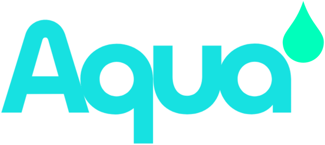

Análise da potabilidade da água pela câmera do celular.

Análise da potabilidade da água pela câmera do celular.
Fita 4 em 1 · Cloro livre · Alcalinidade · pH · Dureza total
Fita compatível
Fita 4 em 1
Cloro livre, alcalinidade, pH e dureza total. Outras fitas não são lidas.
Abra o Aqua no navegador (Chrome ou Safari), onde tudo funciona.
Ou, sem sair do app: copie a foto na galeria (em geral fica em Compartilhar → Copiar), depois toque e segure no quadro abaixo e escolha Colar.
Analisando a fita
Como fotografar a fita
Câmera
O Aqua só funciona com internet. Ligue o Wi-Fi ou os dados móveis e tente de novo.